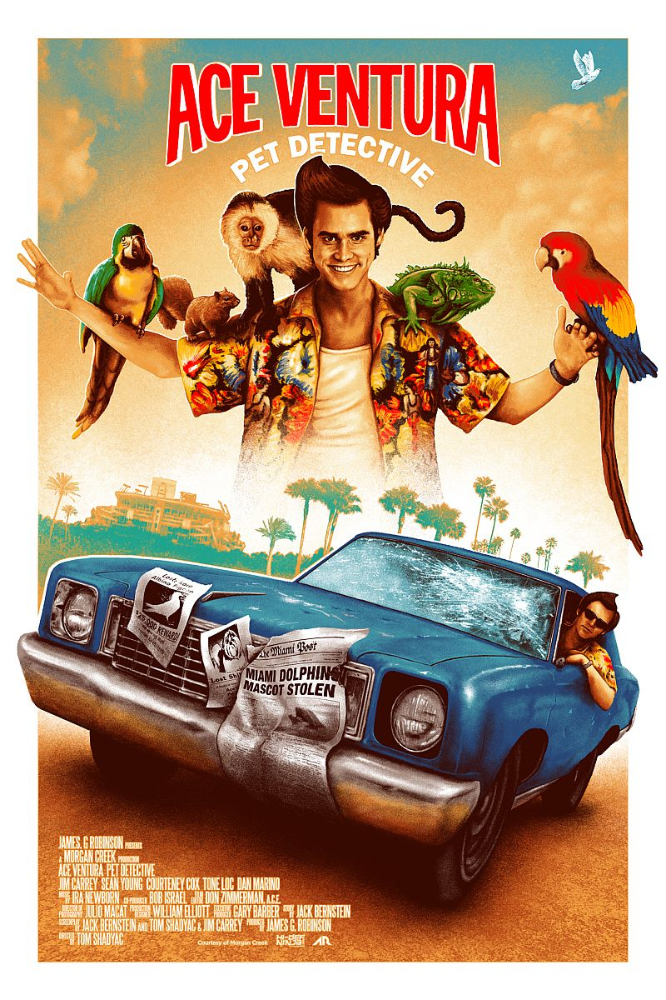
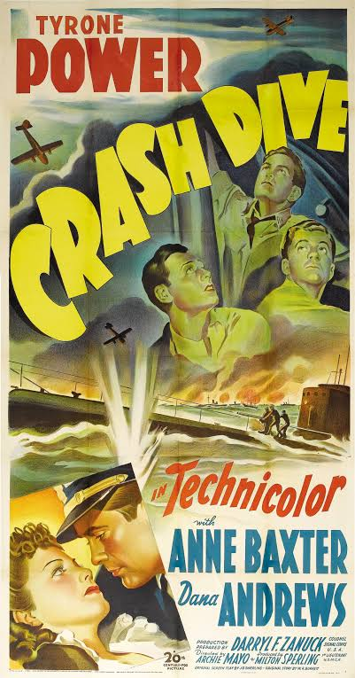
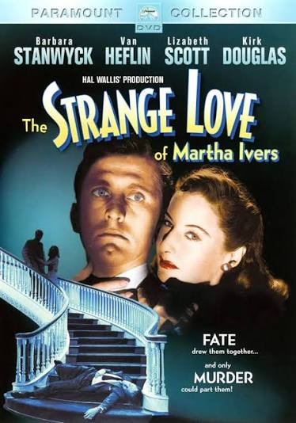

The Prowler (1951) Full Movie | Film Noir | Crime | HD

Synopsis
Starring Van Heflin and Evelyn Keyes, a manipulative police officer uses his position to seduce a lonely housewife, leading to a dark and desperate plot in this 1951 noir classic. Watch more classic and indie films at https://moviehub.uk/.
⭐ Film Highlights & Notes
- Full feature presentation restored for high-quality playback.
- Available to stream on MovieHub Vault.
Enjoying MovieHub? Grab Dennis a coffee to support server costs and keep the vault free for everyone!
☕ Buy Me a CoffeeYou Might Also Like

Great Expectations (1946)

Ace Ventura: Pet Detective (1994) Full Movie | Jim Carrey | Comedy, Crime

Little Dead Rotting Hood 2016.720p

Back to the Future (1985) | Full Movie | Classic

Crash Dive (1943) Full Movie | Classic WW2 Submarine Drama | Tyrone Power & Dana Andrews

The Strange Love of Martha Ivers (1946) Full Movie | Barbara Stanwyck & Kirk Douglas | Film Noir Classic